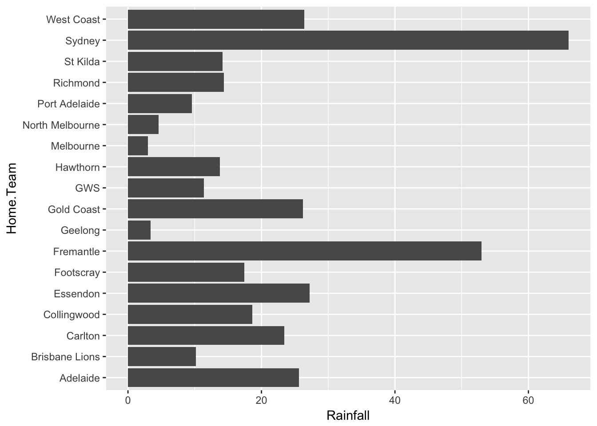

The goal of fitzRoy is to provide a set of functions that allows for users to easily get access to AFL data from sources such as afltables.com and footywire.com. There are also tools for processing and cleaning that data. Future versions will include basic ELO processing functions.
You can install fitzRoy from github with:
# install.packages("devtools")
devtools::install_github("jimmyday12/fitzRoy")The fitzRoy package can be used to simply get data from various sources. Some minimal working examples are below.
Primarily, the tool can be used to access data from various sources. Data is included in the package and can be access directly however this will not be up to date. Each source of data has functions for updating data during the season.
You can access the basic afl tables match results data. This includes all matches from 1897-current. It is generally updated on the day after a round finishes.
You can access the data directly from the package using match_results. This will be updated periodically but you will need to update your R package to get access to the latest data. It is better to use get_match_results directly, as this will give you up to date results.
library(fitzRoy)
results <- get_match_results()
#> Warning: package 'bindrcpp' was built under R version 3.4.4
tail(results)
#> # A tibble: 6 x 16
#> Game Date Round Home.Team Home.Goals Home.Behinds Home.Points
#> <dbl> <date> <chr> <chr> <int> <int> <int>
#> 1 15300. 2018-06-09 R12 Geelong 14 12 96
#> 2 15301. 2018-06-09 R12 GWS 20 14 134
#> 3 15302. 2018-06-09 R12 St Kilda 7 13 55
#> 4 15303. 2018-06-10 R12 Brisbane Li… 8 14 62
#> 5 15304. 2018-06-10 R12 Fremantle 10 11 71
#> # ... with 1 more row, and 9 more variables: Away.Team <chr>,
#> # Away.Goals <int>, Away.Behinds <int>, Away.Points <int>, Venue <chr>,
#> # Margin <int>, Season <dbl>, Round.Type <chr>, Round.Number <int>You can also convert this format into a more analysis friendly “long” format using the helper function convert_results.
results_long <- convert_results(results)
head(results_long)
#> # A tibble: 6 x 13
#> Game Date Round Venue Margin Season Round.Type Round.Number
#> <dbl> <date> <chr> <chr> <dbl> <dbl> <chr> <int>
#> 1 1. 1897-05-08 R1 Brunswick … 33. 1897. Regular 1
#> 2 1. 1897-05-08 R1 Brunswick … -33. 1897. Regular 1
#> 3 2. 1897-05-08 R1 Victoria P… 25. 1897. Regular 1
#> 4 2. 1897-05-08 R1 Victoria P… -25. 1897. Regular 1
#> 5 3. 1897-05-08 R1 Corio Oval -23. 1897. Regular 1
#> # ... with 1 more row, and 5 more variables: Status <chr>, Behinds <chr>,
#> # Goals <chr>, Points <chr>, Team <chr>You can access the fixture using get_fixture function. This will download the fixture for the current calendar year by default.
fixture <- get_fixture()
head(fixture)
#> # A tibble: 6 x 7
#> Date Season Season.Game Round Home.Team Away.Team Venue
#> <dttm> <int> <int> <int> <chr> <chr> <chr>
#> 1 2018-03-22 19:25:00 2018 1 1 Richmond Carlton MCG
#> 2 2018-03-23 19:50:00 2018 2 1 Essendon Adelaide Etiha…
#> 3 2018-03-24 15:35:00 2018 3 1 St Kilda Brisbane… Etiha…
#> 4 2018-03-24 16:05:00 2018 4 1 Port Adel… Fremantle Adela…
#> 5 2018-03-24 18:25:00 2018 5 1 Gold Coast North Me… Cazal…
#> # ... with 1 more rowFootywire data is available in the form of advanced player match statistics from 2010 games onwards. This is when advanced statistics became available.
Footywire data from 2010-2017 is included in the package. This will be updated periodically but you will need to update your R package to get access to the latest data.
## Show the top of player_stats
head(fitzRoy::player_stats)
#> Date Season Round Venue Player Team Opposition
#> 1 2010-03-25 2010 Round 1 MCG Daniel Connors Richmond Carlton
#> 2 2010-03-25 2010 Round 1 MCG Daniel Jackson Richmond Carlton
#> 3 2010-03-25 2010 Round 1 MCG Brett Deledio Richmond Carlton
#> 4 2010-03-25 2010 Round 1 MCG Ben Cousins Richmond Carlton
#> 5 2010-03-25 2010 Round 1 MCG Trent Cotchin Richmond Carlton
#> 6 2010-03-25 2010 Round 1 MCG Dustin Martin Richmond Carlton
#> Status GA Match_id CP UP ED DE CM MI5 One.Percenters BO TOG K HB D M
#> 1 Home 0 5089 8 15 16 66.7 0 0 1 0 69 14 10 24 3
#> 2 Home 0 5089 11 10 14 60.9 1 0 0 0 80 11 12 23 2
#> 3 Home 0 5089 7 14 16 76.2 0 0 0 0 89 12 9 21 5
#> 4 Home 1 5089 9 10 11 57.9 0 0 0 0 69 13 6 19 1
#> 5 Home 0 5089 8 10 13 68.4 1 0 0 1 77 11 8 19 6
#> 6 Home 0 5089 6 12 16 88.9 0 0 1 0 81 5 13 18 4
#> G B T HO I50 CL CG R50 FF FA AF SC CCL SCL SI MG TO ITC T5
#> 1 0 0 1 0 2 2 4 6 2 0 77 85 NA NA NA NA NA NA NA
#> 2 0 0 5 0 8 5 4 1 2 0 85 89 NA NA NA NA NA NA NA
#> 3 1 0 6 0 4 3 4 3 1 2 94 93 NA NA NA NA NA NA NA
#> 4 1 0 1 0 1 2 3 4 1 0 65 70 NA NA NA NA NA NA NA
#> 5 0 0 1 0 2 3 3 2 0 2 65 63 NA NA NA NA NA NA NA
#> 6 0 0 3 0 2 3 1 0 0 1 62 72 NA NA NA NA NA NA NAWe can also use the update_footywire_stats function to get the most up to date data. This will merge data from 2010-current with any new data points.
## Update footywire data
dat <- update_footywire_stats()
#> Getting match ID's...
#> Downloading new data for 1 matches...
#> Getting data from footywire.com
#> Finished getting data
tail(dat)
#> Date Season Round Venue Player
#> 76115 2018-06-14 2018 Round 13 Adelaide Oval Shane Biggs
#> 76116 2018-06-14 2018 Round 13 Adelaide Oval Lukas Webb
#> 76117 2018-06-14 2018 Round 13 Adelaide Oval Easton Wood
#> 76118 2018-06-14 2018 Round 13 Adelaide Oval Thomas Boyd
#> 76119 2018-06-14 2018 Round 13 Adelaide Oval Patrick Lipinski
#> 76120 2018-06-14 2018 Round 13 Adelaide Oval Caleb Daniel
#> Team Opposition Status GA Match_id CP UP ED DE CM
#> 76115 Western Bulldogs Port Adelaide Away 0 9619 3 8 4 40.0 0
#> 76116 Western Bulldogs Port Adelaide Away 1 9619 5 4 5 50.0 0
#> 76117 Western Bulldogs Port Adelaide Away 0 9619 3 5 7 77.8 0
#> 76118 Western Bulldogs Port Adelaide Away 0 9619 6 4 6 66.7 0
#> 76119 Western Bulldogs Port Adelaide Away 1 9619 6 3 7 77.8 1
#> 76120 Western Bulldogs Port Adelaide Away 0 9619 3 1 4 80.0 1
#> MI5 One.Percenters BO TOG K HB D M G B T HO I50 CL CG R50 FF FA AF
#> 76115 0 1 0 88 6 4 10 3 0 0 3 0 0 1 3 1 0 1 44
#> 76116 1 0 0 81 7 3 10 1 0 0 3 0 4 3 5 1 3 1 42
#> 76117 0 3 0 37 4 5 9 3 0 0 2 0 1 0 1 2 0 1 36
#> 76118 0 3 0 88 4 5 9 1 0 0 1 31 1 2 2 0 1 1 58
#> 76119 1 1 0 87 5 4 9 2 1 0 0 0 1 2 1 1 0 0 35
#> 76120 0 1 1 81 3 2 5 1 0 0 0 0 1 0 1 2 0 0 16
#> SC CCL SCL SI MG TO ITC T5
#> 76115 27 0 1 2 160 3 1 2
#> 76116 34 1 2 1 207 2 2 1
#> 76117 53 0 0 1 189 2 4 0
#> 76118 33 1 1 0 162 1 1 0
#> 76119 41 1 1 4 111 1 0 0
#> 76120 21 0 0 0 102 2 3 0We have also included weather data for the 2017 season. This is a work in progress but includes rainfall data from the nearest observation station to each ground. This data is included in the package as results_weather.
library(ggplot2)
library(dplyr)
# Get 2017 weather data
weather <- fitzRoy::results_weather %>%
filter(Season == 2017)
# Plot total rainfal for each home team
ggplot(dat = weather, aes(x = Home.Team, y = Rainfall)) +
geom_col() +
coord_flip() ### Squiggle Data You can access data from the Squiggle API where the tips of well known AFL tipping models are collected. See full instructions on the above link.
# You can get the sources
sources <- get_squiggle_data("sources")
head(sources)
#> url id name
#> 1 https://live.squiggle.com.au/ 1 Squiggle
#> 2 https://thearcfooty.com/ 2 The Arc
#> 3 http://figuringfooty.com/ 3 Figuring Footy
#> 4 http://www.matterofstats.com/ 4 Matter of Stats
#> 5 5 Punters
#> 6 https://footymaths.blogspot.com.au 6 Footy Maths Institute# Get all tips
tips <- get_squiggle_data("tips")
head(tips)
#> updated ateam round tipteamid bits
#> 1 2017-07-11 13:59:46 Richmond 1 14 0.0000
#> 2 2017-04-10 12:18:02 Richmond 1 14 0.2141
#> 3 2017-07-11 13:59:46 Richmond 1 3 -0.2076
#> 4 2017-07-11 13:59:46 Western Bulldogs 1 18 0.3265
#> 5 2017-07-11 13:59:46 Western Bulldogs 1 18 0.3103
#> 6 2017-07-11 13:59:46 Greater Western Sydney 1 1 0.0000
#> correct date hconfidence sourceid venue gameid
#> 1 1 2017-03-23 19:20:00 50.0 1 M.C.G. 1
#> 2 1 2017-03-23 19:20:00 42.0 3 M.C.G. 1
#> 3 0 2017-03-23 19:20:00 56.7 4 M.C.G. 1
#> 4 1 2017-03-24 19:50:00 37.3 4 M.C.G. 2
#> 5 1 2017-03-24 19:50:00 38.0 1 M.C.G. 2
#> 6 1 2017-03-26 15:20:00 50.0 1 Adelaide Oval 8
#> year margin hteamid confidence tip ateamid hteam
#> 1 2017 1.00 3 50.0 Richmond 14 Carlton
#> 2 2017 NA 3 58.0 Richmond 14 Carlton
#> 3 2017 5.39 3 56.7 Carlton 14 Carlton
#> 4 2017 10.31 4 62.7 Western Bulldogs 18 Collingwood
#> 5 2017 17.00 4 62.0 Western Bulldogs 18 Collingwood
#> 6 2017 3.00 1 50.0 Adelaide 9 Adelaide
#> err source
#> 1 42.00 Squiggle
#> 2 NA Figuring Footy
#> 3 48.39 Matter of Stats
#> 4 3.69 Matter of Stats
#> 5 3.00 Squiggle
#> 6 53.00 Squiggle# Get` just tips from round 1, 2018
tips <- get_squiggle_data("tips", round = 1, year = 2018)
head(tips)
#> ateam ateamid bits tip year source venue
#> 1 Adelaide 1 -0.1844 Adelaide 2018 Squiggle Docklands
#> 2 Adelaide 1 -0.3147 Adelaide 2018 The Arc Docklands
#> 3 Adelaide 1 -0.3040 Adelaide 2018 Matter of Stats Docklands
#> 4 Adelaide 1 0.0588 Essendon 2018 Punters Docklands
#> 5 Adelaide 1 -0.5564 Adelaide 2018 Footy Maths Institute Docklands
#> 6 Adelaide 1 -0.1571 Adelaide 2018 PlusSixOne Docklands
#> err gameid date hteam round correct hteamid
#> 1 23.00 373 2018-03-23 19:50:00 Essendon 1 0 5
#> 2 21.00 373 2018-03-23 19:50:00 Essendon 1 0 5
#> 3 21.78 373 2018-03-23 19:50:00 Essendon 1 0 5
#> 4 NA 373 2018-03-23 19:50:00 Essendon 1 1 5
#> 5 33.00 373 2018-03-23 19:50:00 Essendon 1 0 5
#> 6 20.00 373 2018-03-23 19:50:00 Essendon 1 0 5
#> updated hconfidence confidence tipteamid margin sourceid
#> 1 2018-03-23 22:54:38 44.00 56.00 1 11.00 1
#> 2 2018-03-23 22:54:38 40.20 59.80 1 9.00 2
#> 3 2018-03-23 22:54:38 40.50 59.50 1 9.78 4
#> 4 2018-03-23 22:54:38 52.08 52.08 5 NA 5
#> 5 2018-03-23 22:54:38 34.00 66.00 1 21.00 6
#> 6 2018-03-23 22:54:38 44.84 55.16 1 8.00 7Please note that this project is released with a Contributor Code of Conduct. By participating in this project you agree to abide by its terms.